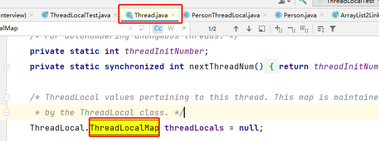
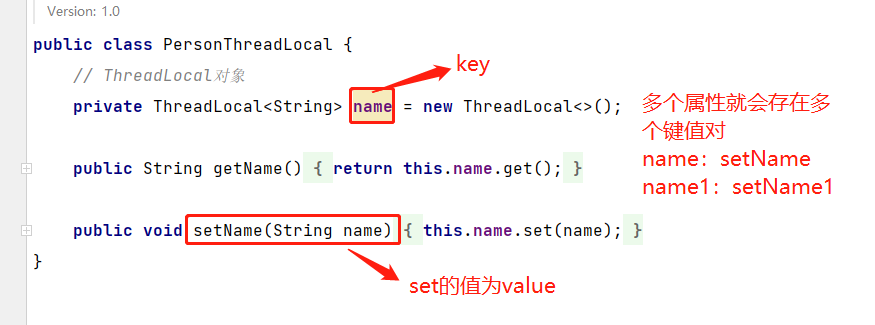
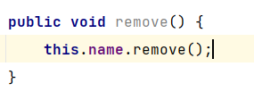
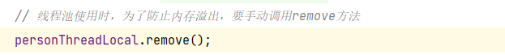
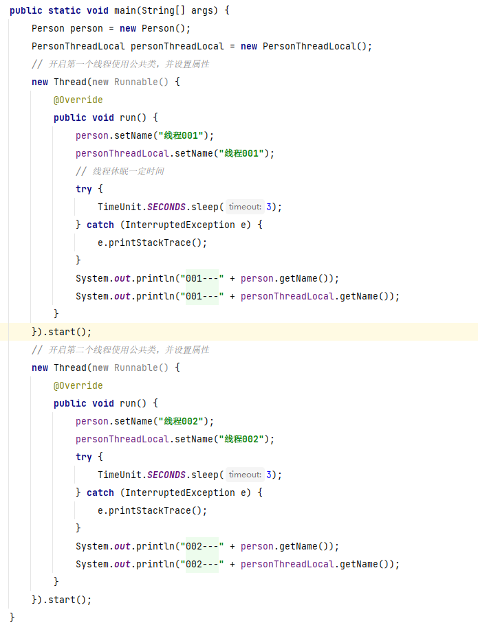
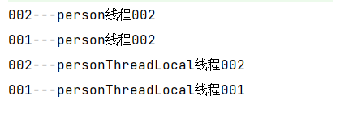
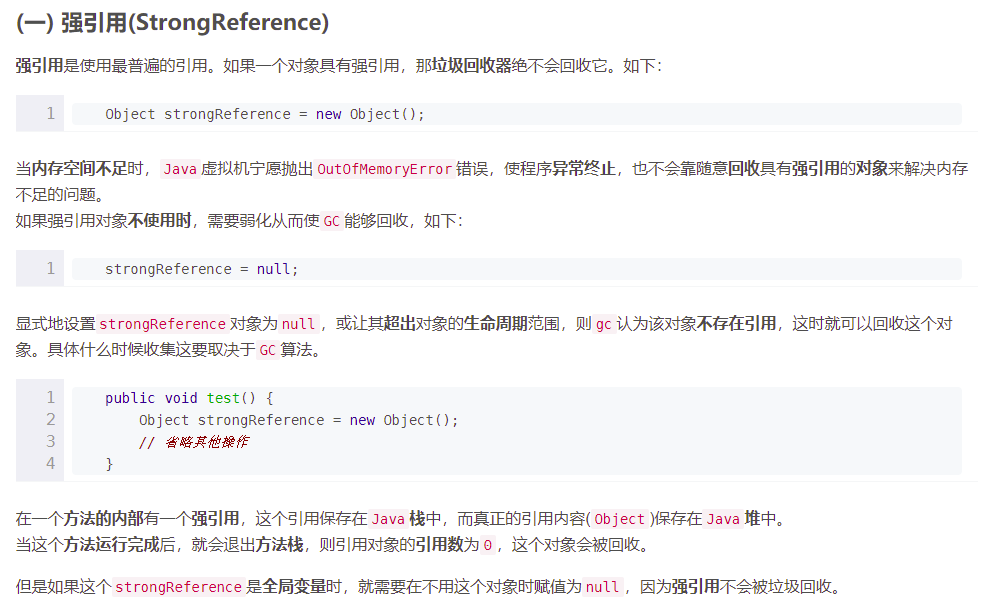

思路
是什么—》底层实现—》优缺点—》应用场景
两个问题
- 什么是
ThreadLocal？ThreadLocal类顾名思义可以理解为线程本地变量。也就是说如果定义了一个ThreadLocal，每个线程往这个ThreadLocal中读写是线程隔离，互相之间不会影响的。它提供了一种将可变数据通过每个线程有自己的独立副本从而实现线程封闭的机制。 - 它大致的实现思路是怎样的？
Thread类有一个类型为ThreadLocal.ThreadLocalMap的实例变量threadLocals，也就是说每个线程有一个自己的ThreadLocalMap。ThreadLocalMap有自己的独立实现，可以简单地将它的key视作ThreadLocal，value为代码中放入的值（实际上key并不是ThreadLocal本身，而是它的一个弱引用）。每个线程在往某个ThreadLocal里塞值的时候，都会往自己的ThreadLocalMap里存，读也是以某个ThreadLocal作为引用，在自己的map里找对应的key，从而实现了线程隔离。
是什么
ThreadLocal是java中的所提供的线程本地存储机制，可以利用该机制将某个数据、某个对象、某个值缓存在某个线程内部，该线程可以在任意时刻、任意方法中获取到相应的内容。
底层实现
ThreadLocal底层通过ThreadLocalMap实现，每个Thread对象中都存在一个ThreadLocalMap，Map的key为ThreadLocal对象，Map的value为需要缓存的值。
注意
1、ThreadLocalMap对象存储在Thread对象中。

2、存储形式

优缺点
如果在线程池中使用ThreadLocal会造成内存泄露，因为当ThreadLocal对象使用完之后，应该把设置的key、value，也就是Entry对象进行回收，但线程池中的线程不会回收，而线程对象是通过强引用指向ThreadLocalMap，ThreadLocalMap也是通过强引用指向Entry对象，线程不被回收，Entry对象也就不会被回收，从而出现内存泄漏。
解决方法是，在使用了ThreadLocal对象之后，手动调用ThreadLocal的remove方法，手动清除Entry对象。


注意
1、使用的好处

开启两个线程，一个是普通的Person类，一个使用ThreaLocal的，运行程度得到的结果

2、强引用

应用场景
ThreadLocal经典的使用场景就是连接管理（一个线程持有一个连接，该连接对象可以在不同方法之间进行传递，线程之间不共享同一个连接）
场景1：
ThreadLocal用作保存每个线程独享的对象，为每个线程都创建一个副本，这样每个线程都可以修改自己所拥有的副本, 而不会影响其他线程的副本，确保了线程安全。
场景2：
ThreadLocal用作每个线程内需要独立保存信息，以便供其他方法更方便地获取该信息的场景。每个线程获取到的信息可能都是不一样的，前面执行的方法保存了信息后，后续方法可以通过ThreadLocal 直接获取到，避免了传参，类似于全局变量的概念。

...
...
Copyright 2021 sunfy.top ALL Rights Reserved